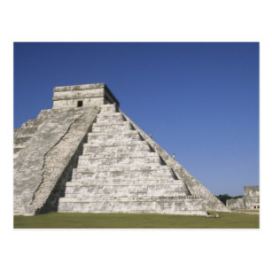
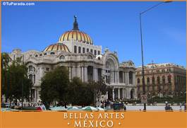

| Estado | Comida tipica | Imagen | Comentario |
| Guadalajara |
|
Visitar la plaza grande |
|
| Yucatan |
|
 |
Visitar la zona arqueologica "Ruta Pack |
| Ciudad de Mexico |
|
 |
Se le conoce como "La ciudad de los palacios |